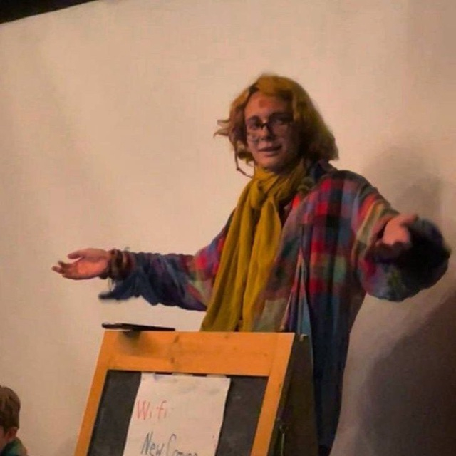
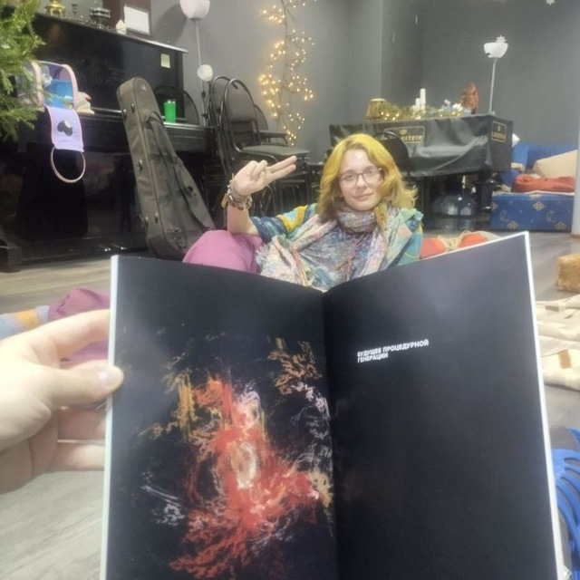
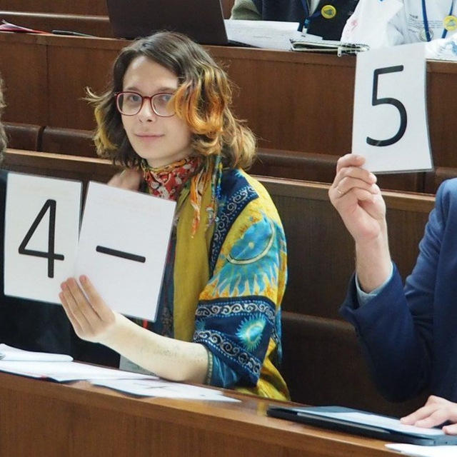
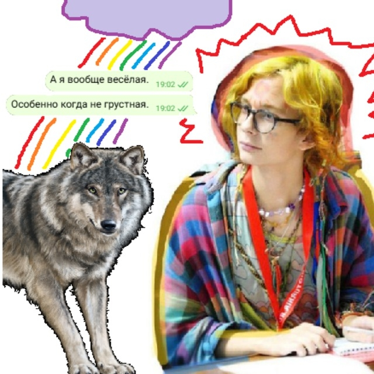
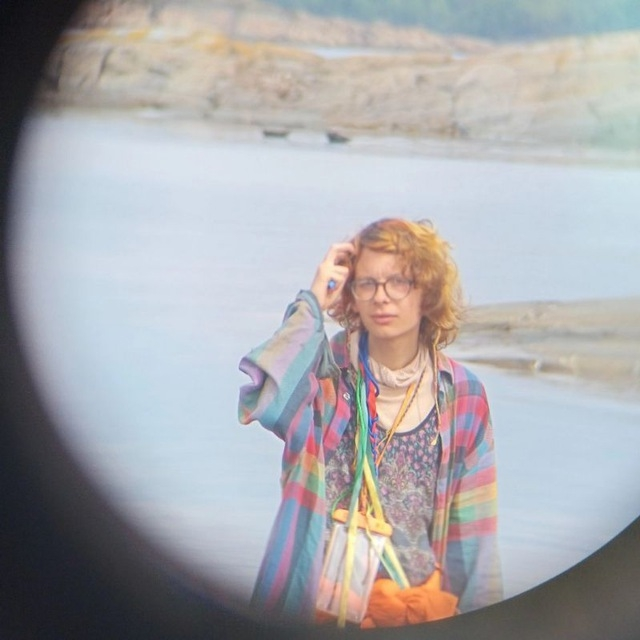

Меня зовут Соня.
Я люблю притворяться перекати-полем, колобродить по метанарративам, влюбляться, наводить суету и работать со смыслами.
Меня вдохновляют только простые пути, а сложные пути не вдохновляют.
Мои взгляды подробно излагаются в разделе «Колонки», который можно найти на этом сайте (пока что туда перенесено далеко не всё из
того, что я писала, однако я над этим работаю). Если совсем вкратце — я стараюсь соразмерять любые свои нравственные позиции
с категорическим императивом Канта («человек является целью сам по себе и не может быть средством для достижения другой цели»);
считаю оптимальным образом будущего панархизм — экстерриториальную государственность свободного выбора; исповедую телеотęизм
(считаю, что Бога пока что нет, но конечной и достижимой целью человечества является его создание).
Меня можно увидеть лично (проще всего — в Москве) без особого повода, а также позвонить или написать мне любым из предложенных способов:
> +79771764712 — телефон
> t.me/sarcoscyphushka — Телеграм (смотрю чаще всего)
> vk.com/postaestetix — ВКонтакте
> sarcoscyphushka@gmail.com — электронная почта
> https://ru.wikipedia.org/wiki/Обсуждение_участника:Postaestetix — обсуждение страницы в Википедии
Briar у меня тоже есть, можно обращаться за id.




